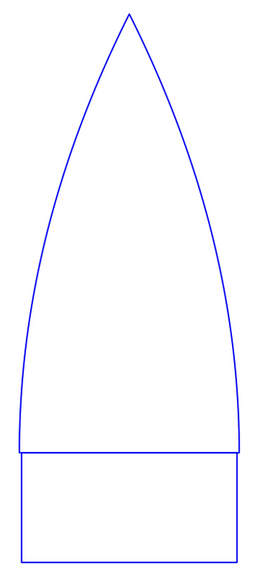

<div id="content-source">
    <div id="model-rockets">
        <h1 style="color: var(--content-text)">Model Rocketry Design and Construction</h1>
        <p>This page contains reference information, diagrams, and how-to videos for the various parts of model rocket creation and flight. To learn more about a specific topic, click on the links in the Table of Contents below:</p>
        <h2>Table of Contents</h2> 
        <ol>
            <li><a href="#about-rockets">About Model Rockets</a></li>
            <li><a href="#rocket-flight">Flight of a Model Rocket</a></li>
            <li>
                <h4>Parts of a Model Rocket</h4>
                <div id="rocket-parts" class="content-container">
                    <div class="content-left">
                        <ol>
                            <li><a href="#nose-cone">Nose Cone</a></li>
                            <li><a href="#recovery-systems">Parachute, shroud lines, Shock Cord, and Mount</a></li>
                            <li><a href="#body-tube">Body Tube</a></li>
                            <li><a href="#launch lug">Launch Lug</a></li>
                            <li><a href="#motor-mount">Engine Holder Assembly or "Motor Mount"</a></li>
                            <li><a href="#fins">Fins</a></li>
                            <li><a href="#retainer">Engine Hook or Retainer</a></li>
                        </ol>
                    </div>
                    <div class="content-right">
                        
                    </div>
                </div>
            </li>
            <li><a href="#aerodynamics">Aerodynamics and Stability</a></li>
            <li><a href="#rocket-motors">Rocket Motors</a></li>
        </ol>
        <div id="about-rockets">
            <h3>About Model Rockets</h3>
            <p>A model rocket is a small, powered replica designed for safe and controlled flight, typically used as a hobby or educational tool. Made from lightweight materials such as plastic, cardboard, or balsa wood, it is equipped with a solid rocket motor that generates thrust to propel it into the sky. Model rockets are guided by aerodynamic fins and often include a parachute or streamer for recovery after their flight.        
        </div>
        <div id="rocket-flight">
            <h2>Flight of a model rocket</h2>
            <div class="content-container">
                <div class="content-left">
                    <p>The flight path of a model rocket begins with the <strong>powered flight phase</strong>, during which the rocket motor ignites and produces thrust to propel the rocket skyward. This phase is characterized by rapid acceleration as the motor's fuel burns, generating enough force to overcome gravity and air resistance. Once the motor's fuel is depleted, <strong>burnout</strong> occurs. At this point, the thrust ceases, but the rocket continues to ascend due to the momentum it gained during powered flight.</p>

                    <p>Following burnout is the <strong>coasting phase</strong>, where the rocket climbs purely under its remaining kinetic energy. This phase ends at the <strong>apogee</strong>, the highest point of the rocket's flight path. At apogee, a <strong>recovery device</strong>, such as a parachute or streamer, is ejected—usually triggered by a small ejection charge in the rocket motor. The recovery device ensures a safe and controlled descent by slowing the rocket's fall, minimizing the risk of damage upon landing and making it easier to retrieve. This sequence creates a smooth and predictable flight path, which is a hallmark of safe and successful model rocket launches.</p>
                </div>
                <div class="content-right">
                    
                </div>
            </div>
        </div>
        <div id="nose-cone">
            <h3>Nose Cones</h3>
            <p>
            The nose is the front end of the model rocket. It deflects air pressure from the rocket and shields any payloads. It
            is made of two parts:
            </p>
            <ul>
                <li>Nose: the part that sticks out of the body tube</li>
                <li>Shoulder: the part that sticks into the body tube</li>
            </ul>
            <p>
                The shape of the nose can vary widely, leading to different aerodynamic
                profiles. Some common nose shapes are in the table below. Click on them
                to learn more about each nose type.
            </p>
            <div style="display: flex; justify-content: center;"> 
                <table style="margin: 10px; width: 425px;" id="nose-table">
                <tr>
                    <td>
                    <a href="#conical"></a>
                    </td>
                    <td>
                    <a href="#ogive"></a>
                    </td>
                    <td>
                    <a href="#ellipsoid"></a>
                    </td>
                </tr>
                <tr>
                    <td>
                    <a href="#conical"><h4>Conical</h4></a>
                    </td>
                    <td>
                    <a href="#ogive"><h4>Ogive</h4></a>
                    </td>
                    <td>
                    <a href="#ellipsoid"><h4>Ellipsoid</h4></a>
                    </td>
                </tr>
                <tr>
                    <td>
                    <a href="#power"></a>
                    </td>
                    <td>
                    <a href="#parabolic"></a>
                    </td>
                    <td>
                    <a href="#haack"></a>
                    </td>
                </tr>
                <tr>
                    <td>
                    <a href="#power"><h4>Power Series</h4></a>
                    </td>
                    <td>
                    <a href="#parabolic"><h4>Parabolic</h4></a>
                    </td>
                    <td>
                    <a href="#haack"><h4>Haack Series</h4></a>
                    </td>
                </tr>
                </table>
            </div>
            <p>
                The nose must always be free to slide forward and come off. Therefore,
                the back end of the nose is cut down to form an internal shoulder which
                will slide inside the body tube and hold the nose in place. The base
                diameter of the nose should match the <em>outside</em> diameter of the
                body tube, while the diameter of the shoulder should match the
                <em>inner</em> diameter of the body tube so that it will slip-fit inside
                the tube. It's better to have the shoulder a little loose because you
                can always build it up by wrapping tape around the shoulder. If it's too
                large, then you'll need to sand the shoulder down. A rule of thumb for
                testing the looseness of the shoulder is that it should pull easily from
                the body tube but shouldn't rattle if you shake the body tube.<br /><br />
                The nose must be made of plastic or balsa wood, but never metal. Nor
                should a metal pin or nail be attached to the tip as it could turn a
                malfunctioning rocket into a missile or lawn dart. Besides, rounded nose
                tips perform better than pointed ones.<br /><br />
                Several commercial noses are available, and it can be very simple to
                select a predesigned nose and move on.<br><br>Designing one's own nose cone is a lot of fun and one of the
                key ways to customize a rocket. It is also one of the key components of
                a rocket's stability and aerodynamics. It is therefore
                <strong><em>very</em></strong> important that fabricated model matches
                the computer design.
            </p>
        </div>
        <div id="rocovery-systems">
            <h3>Parachutes, Streamers, Shock Cords, & Recovery Mounting</h3>
            <p>Recovery systems in model rockets are essential for ensuring a safe descent after the flight, preventing damage and making retrieval easier. Two common types of recovery devices are <strong>parachutes</strong> and <strong>streamers</strong>. Parachutes are designed to provide a slow and controlled descent by catching air and creating drag, which is ideal for larger rockets or rockets landing in open spaces. Parachutes come in the following diameters:</p>
            <ol>
                <li>6 inches</li>
                <li>9 inches</li>
                <li>12 inches</li>
                <li>15 inches</li>
                <li>18 inches</li>
                <li>24 inches</li>
            </ol> 
            <p>Streamers, on the other hand, are long, ribbon-like strips that flutter in the air, creating enough drag to reduce descent speed while remaining compact and easy to pack. Streamers are often used for smaller rockets or launches in tight areas where a parachute may drift too far.</p>
            <div class="content-container">
                <div class="content-left">
                    <p>To securely mount the recovery system, builders often use a <strong>shock cord assembly</strong> that prevents the rocket parts from separating upon ejection. A popular technique involves wrapping and glueing a piece of <strong>Kevlar</strong> around the motor mount to serve as the anchor point. Kevlar is incredibly strong and heat-resistant, which makes it an ideal material for withstanding the ejection charge. The Kevlar cord is tied to a <strong>rubber shock cord</strong>, which acts as an elastic buffer to absorb the force of the ejection and prevent damage to the rocket body. This assembly typically connects to the recovery device (parachute or streamer) and the nose cone, ensuring all components stay tethered together during descent. By using this robust setup, you can build a reliable recovery system that keeps your rocket safe and ready for future flights.</p>
                </div>
                <div class="content-right">
                    
                </div>
            </div>
        <div id="body-tube>">

        </div>
        <div id="launch-lug">

        </div>
        <div id="motor-mount">
            <h3>Motor Mounts</h3>
            <p>
                The motor mount is the special assembly at the bottom of the rocket that holds the motor. It has two essential functions:</p>
            <ul>
                <li>Ensure the motor doesn't slide forward while firing or falling out during ejection charge.</li>
                <li>Center the motor inside the rocket body tube.</li>
            </ul>
            <div class ="content-container">
                <div class = "content-left">
                    <p>The main components of a motor mount include the motor tube (1), centering rings (2), engine clip (3), and a motor block (4). The motor tube houses the rocket motor, while centering rings keep the mount aligned within the rocket body. An engine clip secures the motor in place, preventing it from being ejected during operation, and the thrust ring ensures the motor doesn't slide forward under the pressure of ignition. Larger rocket motors have a thrust ring on the bottom of the motor around the nozzle, making the motor block unnecessary.
                    </p>
                </div>
                <div class="content-right">
                    
                </div>
            </div>
        </div>
        <div id="fins">

        </div>
        <div id="retainer">

        </div>
        <div id="aerodynamics">

        </div>
        <div id="rocket-motors">

    </div>
</div>